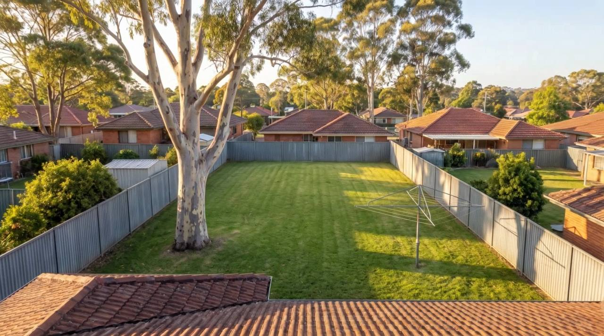
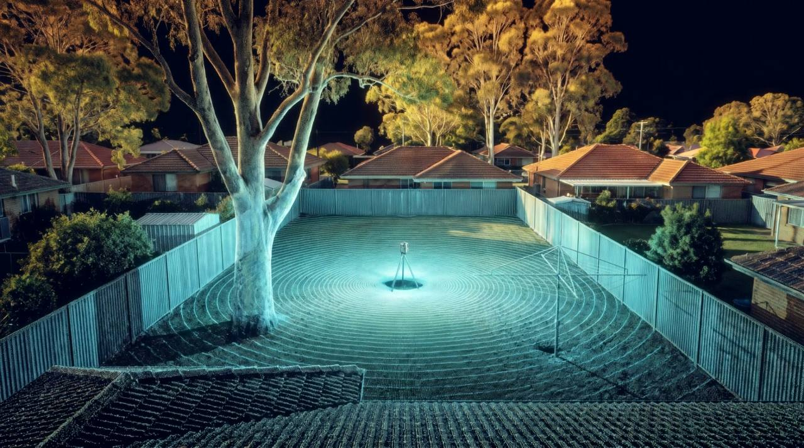
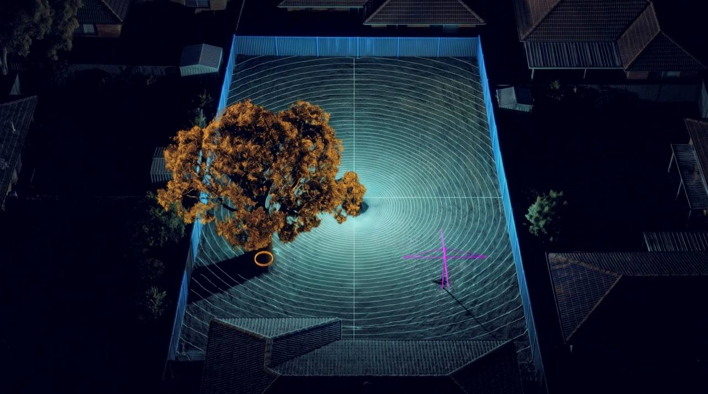
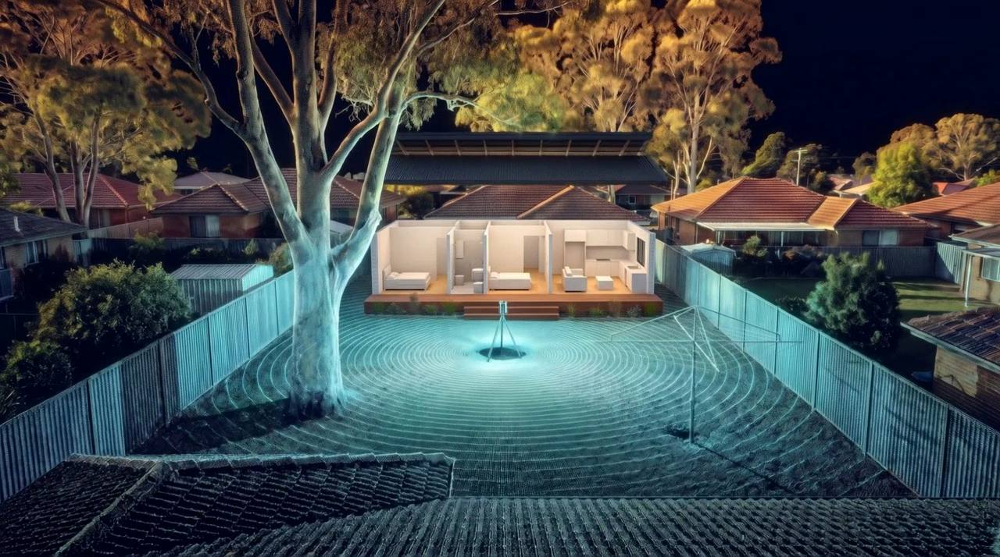
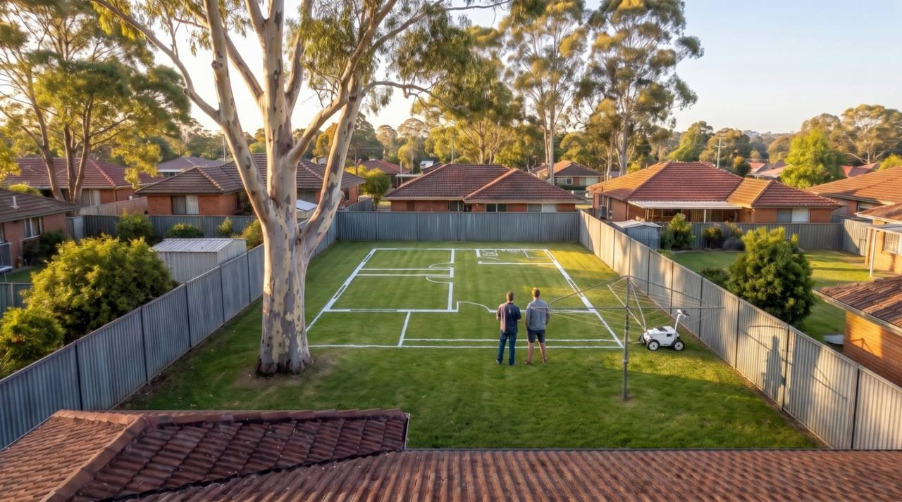
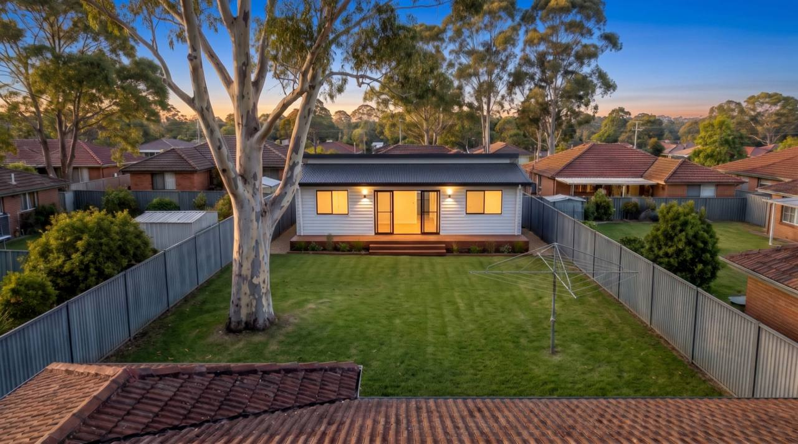
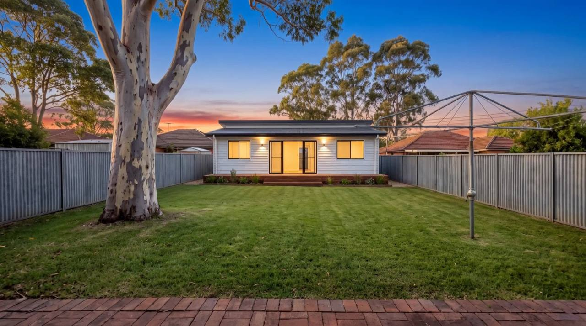

A-01 · Site
See the granny flat in your backyard before anyone digs.
Backyard Twin scans your block, designs the flat into the real yard, then paints it full-size on your lawn so you can walk through it.
- Example block
- Carlingford NSW
- Lot
- 650 m²
- Frontage
- 15 m

A-02 · Scan
One visit captures the whole yard.
A tripod LiDAR scanner and a short drone flight record every fence, tree, slope and pit as millions of measured points.
- Target time on site
- 40 min
- Target accuracy
- ±5 mm
- Capture
- Tripod + drone

A-03 · Classify
The yard, understood.
Software sorts the scan into lawn, trees, fences and structures, and draws contours every 100 mm, so what fits is decided by your exact block.
- Fall to rear fence
- 0.6 m
- Tree protection zone
- 6.0 m
- Contour interval
- 100 mm

A-04 · Design
Your planner choices, placed on the real site.
The 2-bedroom Coastal design from the Granny Flat Planner drops onto the twin. Levels, the tree zone and the CDC thresholds are checked before a builder quotes.
- Footprint
- 9.6 × 6.25 m
- Floor area
- 60 m²
- CDC pre-check
- Pass

A-05 · Set-out
Walk it before you build it.
A line-marking robot paints the floor plan full-size on your lawn. Stand in the living room, check the bedroom view, and move it a metre if it feels wrong.
- Target set-out tolerance
- ±10 mm
- Turf paint lasts
- 2–3 weeks

A-06 · Build
Built where you stood.
Your builder gets the survey, the levels and the set-out file, so the slab lands on the lines you walked.
- Builder pack
- Twin · levels · CDC · DXF

A-07 · Handover
Welcome home.
Start with your block. The Granny Flat Planner takes about five minutes and tells you what fits.